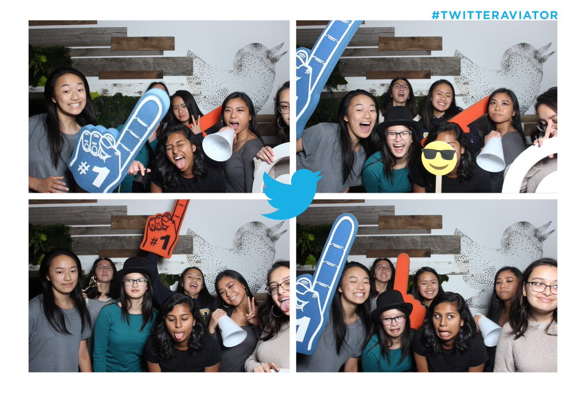

About Girls Who Code Summer Immersion Program
About Girls Who Code Summer Immersion Program 
Girls Who Code is a national non-profit organization dedicated to making change by closing the gender gap in technology. This summer immersion program brought girls from all over the nation and put them in a open and fun classroom.
Our class of 20 girls was fortunate enough to have a classroom at Twitter. Everyday for seven weeks, we would learn about computer science by doing projects in art and storytelling, robotics, video games, web sites, apps and more. We also went on field trips to other tech companies like Dolby and listened to many guest speakers. We gained many mentors, friendships, and connections throughout the whole program.
